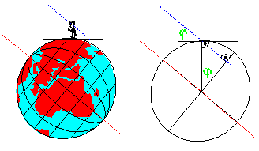
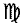
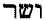
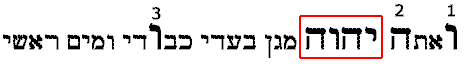
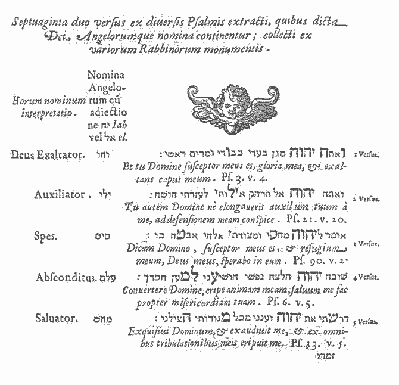
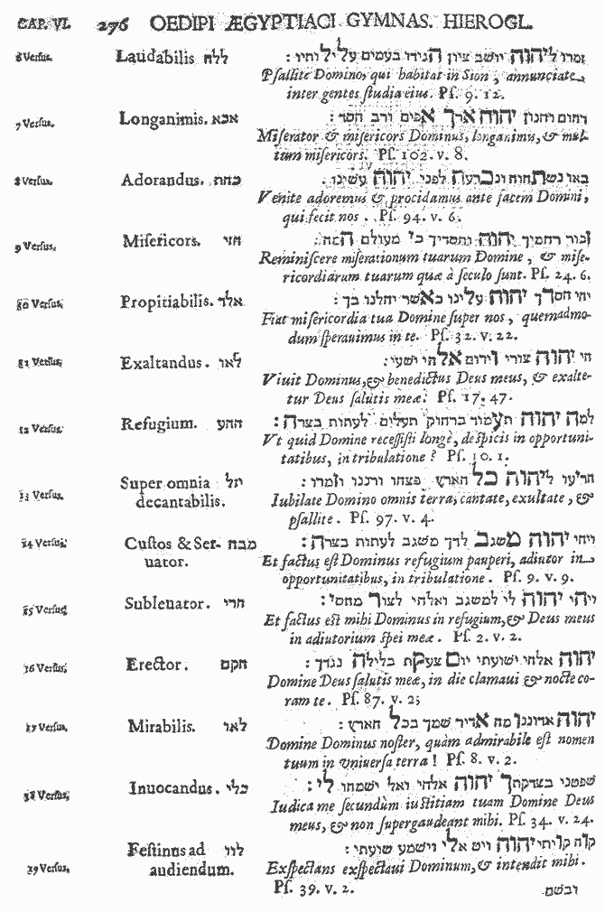
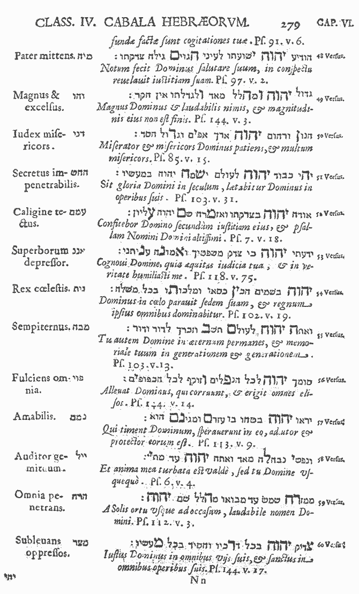
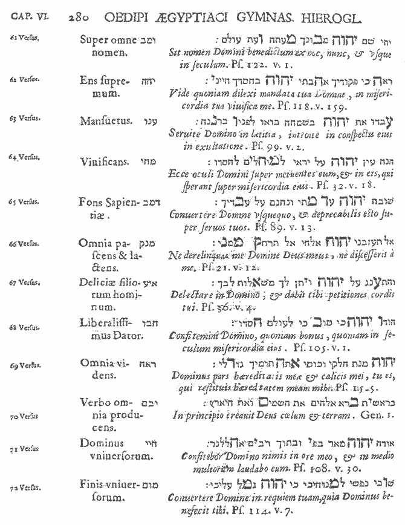
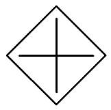
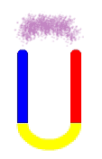

Aryeh
Kaplan führt in seinem Buch "Meditation and Kabbalah" Seite
93ff eine sehr interessante Erklärung Abulafias zur richtigen Aussprache
der 72 Namen an. Wie Sie wahrscheinlich wissen gibt es einen schon lange
andauernde Diskussion darüber, wie diese Namen richtig auszusprechen
sind. Man vergleiche dazu zum Beispiel weiter unten: statt "Jeliel"
als zweiten Geniennamen BN verwendet "Julul".
Nach
der oben verwendeten Methode die 72 Gottesnamen aus den 3 Zeilen des Exodus
auszuziehen, erhält man nur die drei Konsonanten des Gottesnamens.
Um den Namen aussprechen zu können, müssen auch noch Vokale hinzugefügt
werden. Und dabei haben sich bisher zum Teil große Unterschiede ergeben.
Nach Abraham Abulafia, einem der kabbalistischen Großmeister der originalen
hebräischen Kabbalah, müssen die sogenannten "natürlichen"
Vokale verwendet werden.
Kaplan
schreibt: "Dies ergibt allerdings nur die Konsonanten des Namens. Die
Vokale die verwendet werden wenn man den Namen ausspricht, ist der "natürliche
Vokal", der Teil eines jeden Konsonanten ist.
"Abulafia
erklärt, dass der "natürliche Vokal" der erste Vokal
ist, der im Namen des Konsonanten selbst enthalten ist. So ist zum Beispiel
der erste Vokal im Namen des Buchstabens Beth ( ,
ausgeschrieben als
,
ausgeschrieben als  )
ein "e", und deshalb ist "é" oder Tzeré
(..) der natürliche Vokal von Beth." Kaplan listet dann alle "natürlichen
Vokale" aller Buchstaben auf:
)
ein "e", und deshalb ist "é" oder Tzeré
(..) der natürliche Vokal von Beth." Kaplan listet dann alle "natürlichen
Vokale" aller Buchstaben auf:
| Buchstabe |
Natürlicher
Vokal
|
|
Alef |
a
|
Kametz |
| Beth |
e
|
Tzeré |
| Gimel |
i
|
Chirek |
| Dalet |
a
|
Kametz |
| Heh |
e
|
Tzeré |
| Vav |
a
|
Kametz |
| Zayin |
a
|
Kametz |
| Chet |
e
|
Tzeré |
| Tet |
e
|
Tzeré |
| Yod |
o
|
Cholam |
| Kaf |
a
|
Kametz |
| Lamed |
a
|
Kametz |
| Mem |
e
|
Tzeré |
| Nun |
u
|
Shurek |
| Samekh |
a
|
Kametz |
| Ayin |
a
|
Kametz |
| Peh |
e
|
Tzeré |
| Tzadi |
a
|
Kametz |
| Kof |
o
|
Cholam |
| Resh |
e
|
Tzeré |
| Shin |
i
|
Chirek |
| Tav |
a
|
Kametz |
Tabelle:
natürliche Vokal nach Abulafia
Die
folgende Tabelle vergleicht die 72 Namen wie sie von Bardon angeführt
werden mit denen von Agrippa und denen nach Abulafia.
Man
beachte, dass die Namen Bardons teilweise grobe Fehler enthalten: z.B. der
Name Nr. 17 Lanoiah (Bardon) ist falsch:
das entsprechende Triplett enthält kein "n"; es enthält
Lamed, Aleph und Vau, Agrippas "Leavjah" ist dagegen richtig;
Name Nr. 43 "Veubiah" (Bardon)
ist falsch: das entsprechende Triplett enthält kein "b",
es enthält die Buchstaben Vau, Vau, Lamed; Agrippas "Vevaljah";
und so weiter ...
Ich habe kleinere Unterschiede blau markiert, echte Fehler rot. Man beachte
auch, das ein Vau entweder als Konsonant "V" oder als Vokal "O",
"U" (= Matres lectionis, Fachterminus der hebräischen Grammatik)
dienen kann.
Fehler
sind in solchen Listen sehr oft anzutreffen. Es ist immer eine gute Idee
jede Einzelheit, die man praktisch verwenden will, doppelt nachzuprüfen.
Zum Beispiel gibt es auch einen Fehler im obigen originalen Diagramm der
drei Exodusverse von Agrippa: es fehlt der 13 Buchstabe (Yod) der ersten
Zeile. Sogar Kaplan macht bei der Zusammenstellung der 72 Tripletts Fehler,
siehe "Meditation and Kabbalah" Seite 94 "THE NAME OF SEVENTY-TWO":
Triplett 7 ist falsch: der dritte Buchstabe ist ein "He", sollte
aber ein "Aleph" sein; Triplett 38: der erste Buchstabe ist ein
"He" sollte aber ein "Chet" sein.
Wenn
man Kaplans Liste der "natürlichen Vokale" verwendet, dann
ändert sich die Aussprache der 72 Namen ziemlich drastisch. Ich habe
allerdings den Eindruck, dass Abulafias Aussprache die beste ist. Allerdings
verwendet Abulafia nur die drei Buchstaben der 72 Gottesnamen ohne die Zusätze
-el und -yah.
Ich verwende in der folgenden Liste "Y" für den Buchstaben
"Yod". Außerdem verwende ich Agrippas Art um "Kaf"
und "Kof" zu übertragen. Kaf = c, Kof = k. Man vergleiche
dazu auch Israel Regardies Anmerkung auf Seite 104 von "The Golden
Down" über die zwei Hebräischen Dialekte Sephardic und Ashkenazic
mit ihrer unterschiedlichen Aussprache. Agrippa macht in seiner Liste keinen
Unterschied zwischen den zwei Buchstaben "He" und "Chet",
ich verwende "h" für "He" und "ch" für
"chet". Weiters verwende ich wie Abulafia ein "E" für
Ayin um es von "Aleph" "A" zu unterscheiden; z.B. schreibe
ich den Namen 47 mit den drei Buchstaben Ayin, Shin, Lamed als Eashila[-yah]
(nicht Aashila[-yah]).
Man
beachte auch, dass die zwei Namen 11 und 17 identisch sind, die Tripletts
sind die gleichen und auch der Zusatz -yah.
| |
Bardon
|
Agrippa
|
Abulafia
|
|
1
|
Vehu-iah
|
Vehu-jah |
Vaheva[-yah]
|
|
2
|
Jeli-el
|
Jeli-el |
Yolayo[-el]
|
|
3
|
Sita-el
|
Sita-el |
Sayote[-el]
|
|
4
|
Elem-iah
|
Elem-jah |
Ealame[-yah]
|
|
5
|
Mahas-iah
|
Mahas-jah |
Meheshi[-yah]
|
|
6
|
Lelah-el
|
Lelah-el |
Lalahe[-el]
|
|
7
|
Acha-iah
|
Acha-jah |
Aacahe[-yah]
|
|
8
|
Kahet-el
|
Cahet-el |
Cahetha[-el]
|
|
9
|
Azi-el
|
Hazi-el |
Hezayo[-el]
|
|
10
|
Alad-iah
|
Alad-jah |
Aalada[-yah]
|
|
11
|
Lauv-iah
|
Lavi-jah |
Laaava[-yah]
|
|
12
|
Haha-iah
|
Haha-jah |
Heheea[-yah]
|
|
13
|
Jezal-el
|
Jezal-el |
Yozala[-el]
|
|
14
|
Mebah-el
|
Mebah-el |
Mebehe[-el]
|
|
15
|
Hari-el
|
Hari-el |
Hereyo[-el]
|
|
16
|
Hakam-iah
|
Hakam-jah |
Heqome[-yah]
|
|
17
|
Lano-iah
|
Leav-jah |
Laaava[-yah]
|
|
18
|
Kali-el
|
Cali-el |
Calayo[-el]
|
|
19
|
Leuv-iah
|
Levu-jah |
Lavava[-yah]
|
|
20
|
Pahal-iah
|
Pahal-iah |
Pehela[-yah]
|
|
21
|
Neleka-el
|
Nelcha-el |
Nulaca[-el]
|
|
22
|
Jeiai-el
|
Jeii-el |
Yoyoyo[-el]
|
|
23
|
Melah-el
|
Melah-el |
Melahe[-el]
|
|
24
|
Hahu-iah
|
Hahvi-ja |
Cheheva[-yah]
|
|
25
|
Nith-Ha-iah
|
Nitha-jah |
Nuthahe[-yah]
|
|
26
|
Haa-iah
|
Haa-jah |
Heaaaa[-yah]
|
|
27
|
Jerath-el
|
Jerath-el |
Yoretha[-el]
|
|
28
|
See-iah
|
See-jah |
Shiaahe[-yah]
|
|
29
|
Reii-el
|
Reii-el |
Reyoyo[-el]
|
|
30
|
Oma-el
|
Oma-el |
Aavame[-el]
|
|
31
|
Lekab-el
|
Lecab-el |
Lacabe[-el]
|
|
32
|
Vasar-iah
|
Vasar-jah |
Vashire[-yah]
|
|
33
|
Jehu-iah
|
Jehu-jah |
Yocheva[-yah]
|
|
34
|
Lahab-iah
|
Lehah-jah |
Laheche[-yah]
|
|
35
|
Kevak-iah
|
Cavac-jah |
Cavako[-yah]
|
|
36
|
Menad-el
|
Manad-el |
Menuda[-el]
|
|
37
|
Ani-el
|
Ani-el |
Aanuyo[-el]
|
|
38
|
Haam-iah
|
Haam-jah |
Heeame[-yah]
|
|
39
|
Reha-el
|
Reha-el |
Reheea[-el]
|
|
40
|
Ieiaz-el
|
Jeiaz-el |
Yoyoza[-el]
|
|
41
|
Hahah-el
|
Haha-el |
Hehehe[-el]
|
|
42
|
Mika-el
|
Mica-El |
Meyoca[-el]
|
|
43
|
Veubi-ah
|
Veval-jah |
Vavala[-yah]
|
|
44
|
Ielah-iah
|
Jelah-jah |
Yolahe[-yah]
|
|
45
|
Seal-iah
|
Saal-jah |
Saaala[-yah]
|
|
46
|
Ari-el
|
Ari-el |
Eareyo[-el]
|
|
47
|
Asal-iah
|
Asal-jah |
Eashila[-yah]
|
|
48
|
Miha-el
|
Miha-el |
Meyohe[-el]
|
|
49
|
Vehu-el
|
Vehu-el |
Vaheva[-el]
|
|
50
|
Dani-el
|
Dani-el |
Danuyo[-el]
|
|
51
|
Hahas-iah
|
Hahas-jah |
Hecheshi[-yah] |
|
52
|
Imam-iah
|
Imam-jah |
Eameme[-yah] |
|
53
|
Nana-el
|
Nana-el |
Nunuaa[-el] |
|
54
|
Nitha-el
|
Nitha-el |
Nuyotha[-el] |
|
55
|
Meba-iah
|
Mebah-jah |
Mebehe[-yah] |
|
56
|
Poi-El
|
Poi-El |
Pevayo[-el] |
|
57
|
Nemam-iah
|
Nemam-jah |
Numeme[-yah] |
|
58
|
Jeial-el
|
Jeiali-el |
Yoyola[-el] |
|
59
|
Harah-el
|
Harah-el |
Hereche[-el] |
|
60
|
Mizra-el
|
Mizra-el |
Mezare[-el] |
|
61
|
Umab-el
|
Umab-el |
Vamebe[-el] |
|
62
|
Jah-H-el
|
Jahh-el |
Yohehe[-el] |
|
63
|
Anianu-el
|
Anav-el |
Eanuva[-el] |
|
64
|
Mehi-el
|
Mehi-el |
Mecheyo[-el] |
|
65
|
Damab-iah
|
Damab-jah |
Damebe[-yah] |
|
66
|
Manak-el
|
Menak-el |
Menuko[-el] |
|
67
|
Eiai-el
|
Eia-el |
Aayoea[-el] |
|
68
|
Habu-iah
|
Habu-jah |
Chebeva[-yah] |
|
69
|
Roch-el
|
Roeh-el |
Reaahe[-el] |
|
70
|
Jabam-iah
|
Jabam-jah |
Yobeme[-yah] |
|
71
|
Hai-el
|
Haiai-el |
Heyoyo[-el] |
|
72
|
Mum-iah
|
Mum-jah |
Mevame[-yah] |
Tabelle:
Vergleich der 72 Namen bei Bardon, Agrippa and Abulafia.
Somit
entstehen 72 fünfbuchstabige Gottesnamen oder Namen von Genien, die
wir im Werk Bardons in der Tat der Merkursphäre zugeordnet finden.
Wenn ich hier BN richtig interpretiere, dann sieht er in den 72 dreibuchstabigen
Namen das Wirken der "Göttlichen Trinität" durch den
Einfluss der Merkursphäre hindurch, die durch das Erweitern der dreibuchstabigen
Geniennamen mittels der Kraftschlüssel auf 5 Buchstaben zum Tragen
kommt.
Wenn
man das Wesen der Trinität und der "Fünfheit" nach dem
selben Prinzip auf einen einfachen "Papiermagneten" wie oben beschrieben
anwendet:
"Papiermagnet"
der "Fünfheit"; als Verlauf dargestellt.
dann
könne man die Wirksamkeit eines solchen "Papiermagneten"
noch weiter verstärken. Dazu wird dieser "einfache Papiermagnet"
zur "Fünfheit" erweitert:
"Papiermagnet"
der "Fünfheit"; diskret dargestellt.
und
diese "Fünfheit" nochmal in drei Bereiche unterteilt, um
das Prinzip der "Trinität" zur Wirkung zu bringen.
Dadurch
entsteht ein zusammengesetzter "Papiermagnet" aus 15 Feldern,
nach dem folgenden Diagramm:
Zusammengesetzter
"Papiermagnet" aus 15 Feldern; diskret dargestellt.
In dieses Diagramm
werden nun die Worte des ersten Verses des Johannisevangeliums eingetragen:
|
AM
|
ANFANG
|
WAR
|
DAS
|
WORT
|
|
DAS
|
WORT
|
WAR
|
BEI
|
GOTT
|
|
UND
|
GOTT
|
WAR
|
DAS
|
WORT
|
Zusammengesetzter
"Papiermagnet" aus 15 Feldern; diskret dargestellt,
mit den ersten Worten des Johannisevangeliums.
Dieser
Vers, habe "bestimmte Wirkungen", "obwohl heute die Wenigsten
den wahren Sinn kennen", so BN. Näheres zu dieser kryptischen
Bemerkung wird nicht angeführt.
Durch
diese Dreiteilung des "Papiermagneten" seien weitere "Magnete"
gebildet worden, wie jeder mit Hilfe des siderischen Pandels herausfinden
könne, fährt BN fort. Und zwar komme es zu einer zyklischen Kräfteverteilung
was sich durch unterschiedliche Farben der einzelnen Felder bemerkbar mache,
wie man selbst durch das Pendel ermitteln kann. Blau steht dabei für
Schöpfung, gelb für Erhaltung und rot für Auflösung,
oder in Bezug auf den Makrokosmos ausgedrückt: blau für Abstoßung
(Expansion, zentrifugal), rot für Anziehung (Zusammenziehung, zentripetal).
BN führt als Beispiel auch den folgenden Bibelspruch mit seiner Erläuterung
an: "Du sollst deinen Nächsten (räumliche Trennung,
Abstoßung, zentrifugal) lieben (Liebe, Anziehung, zentripetal)
als dich selbst."
|
AM
|
ANFANG
|
WAR
|
DAS
|
WORT
|
|
DAS
|
WORT
|
WAR
|
BEI
|
GOTT
|
|
UND
|
GOTT
|
WAR
|
DAS
|
WORT
|
Zyklische
Richtung der "Energieströme" im erweiterten Papiermagnet.

Die
Energie gehe vom linken blauen "Am" aus, führe über
das rechte rote "Wort", über das gelbe "Gott",
blaue "Wort", rote "Und", gelbe "Das" wieder
zum Ursprung "Am" zurück.
Dies
lasse sich alles durch
das Pendel feststellen, indem man über den entsprechenden Feldern des
erweiterten "Papiermagneten" pendle und die Schwingrichtung des
Pendels auswerte.
Richtung
der "Energieströme" im kreisförmigen Papiermagneten.
BN
gibt weiters an, dass sich das "blaue Prinzip" der Schöpfung
immer im Inneren manifestiere, also von Innen, vom Zentrum nach außen
dränge (zentrifugal), während sich das "rote Prinzip"
der Auflösung immer außen befinde, sich also von Außen
zurück in das Zentrum (zentripetal, Wiedervereinigung, Anziehung, Liebe)
dränge.
|
Schöpfung
|
zentrifugal
|
Abstoßung
|
Trennung
|
|
Erhaltung
|
|
|
|
|
Auflösung
|
zentripetal
|
Anziehung
|
Liebe
|
Liste
der Entsprechungen der drei Grundkräfte.
Auch
bei Bardon finden wir diese Angaben: das elektrische Fluid befinde sich
immer im Zentrum, während sich das magnetische Fluid immer in der Peripherie
befinde (siehe z.B. die Angaben über das Voltieren im WWA). Interessanterweise
ist aber die Farbzuordnung bei Bardon genau umgekehrt: dem elektrische Fluid,
das aus dem Feuerprinzip entstehe, wird die rote Farbe, dem magnetischen
Fluid, das aus dem Wasser Element entstehe, die blaue Farbe zugeordnet.

Skizze
10 Sephirot.
Auch
bei einer Skizze der 10 Sephirot würden die mit Pfeilen gekennzeichneten
Stellen blau, gelb und rot pendeln; die freibleibenden Zwischenräume(?)
würden entsprechend der vorigen kreisförmigen Form des Papiermagneten
innen blau, in der Mitte violett und außen rot "pendeln".
III
22-29: In den folgenden Absätzen erläutert BN die Theorie der
Zentralsonne, die als erstes Schöpfungszentrum entstanden sei und von
der ausgehend dauernd weitere Sterne emaniert werden. Diese Zentralsonne
stellt also den Brennpunkt der Emanation der Schöpfung dar. BN legt
nach Untersuchungen (1885) von Dr. J.H. von Mädler, Direktor der "Sternwarte
Dorpat" , diesen "allgemeinen Schwerpunkt" in die Gegend
der Gruppe der Plejaden.
Nach
heutiger Sicht müsste man diese "Zentralsonnen-Theorie" wahrscheinlich
in unsere heutige "Urknall-Theorie" übersetzen, nach der
das Weltall ähnlich der Zentralsonnen-Vorstellung von BN aus einem
zentralen Punkt mit unendlicher Dichte und Energie (Singularität) entstanden
ist. Es wäre interessant, ob man hierfür einen bestimmten Punkt
lokalisieren kann und ob dieser in der Nähe der Plejaden zu finden
wäre. Falls ich Näheres dazu feststellen kann, werde ich es hier
anfügen.
III
35/36: Der Mensch als Mikrokosmos und Träger des Gottesfunken funktioniere
als kleines Kraftzentrum und könne deshalb die makrokosmischen Vorgänge
beeinflussen, die im Makrokosmos und genauso im Menschen auf der Trinität
beruhen: er kann aus diesem Grund die "Naturkräfte leiten"
und "sich untertan machen". Auf dieser Grundlage basieren Kraftmaschinen
wie der Dynamo, durch den die Kraft der Elektrizität in Gang gesetzt
wird; Magier und Kabbalisten würden dasselbe erreichen, nur ohne den
Materialaufwand großer Maschinen "indem sie ebenso wirkende Zeichnungen
und Schriftzeichen verwendeten": dadurch würden diese Art von
"Maschinen" in Bewegung gesetzt.
III
37: Die Magie habe also nichts übernatürliches an sich. BN scheint
in der Anwendung der 72 Gottesnamen einer Art von mechanistischer Naturmagie
zu sehen.
Kommentar
zu BN's:
IV.)
Talismanische Theomagie
In
diesem Kapitel (41 Absätze) erklärt BN die Theorie, Herstellung
und effektive Wirkungsweise der 72 Geniennamen durch talismanische Theomagie
seines Systems. Ich werde versuchen, sein System als systematischen Gesamtentwurf
darzustellen.
Wie
wir im vorigen Kapitel gesehen haben, wirken nach BN Diagramme, wenn sie
den makrokosmischen Gesetzen analog sind auf makrokosmische Weise, mit anderen
Worten, diese Diagramme wirken direkt auf die uns umgebende objektive Realität
ein. Falls ich BN richtig interpretiere, dann ist er der Ansicht, dass die
72 Geniennamen makrokosmische Wirkprinzipien einer höheren Ordnung
darstellen.
Falls
man durch die richtige Verwendung von Sigillen als "Papiermagneten"
eine Verbindung zu diesen höheren Wirkprinzipien herstellen kann, dann
sei man in der Lage, damit makrokosmische = objektive Wirkungen auszulösen,
bzw. einen Einfluss der Genien auf sein eigenes Wesen = Mikrokosmos auszulösen.
Man könnte also auch sagen, dass der richtig hergestellte Talisman
in Resonanz zu einem der 72 Vorsteher schwingt, und durch diese Resonanz
der Kontakt zum Wirkprinzip hergestellt wird und dadurch das Wirkprinzip,
das bei jedem der Vorsteher etwas anders ist, zum Tragen kommt.
Die
Crux bei dieser Arbeit ist das Herstellen eines Talismans, der auch wirklich
diese höheren Wirkprinzipien abbildet, er muss also gesetzmäßig
richtig aufgebaut sein, um Wirkungen entfalten zu können. Geht man
dabei nicht gesetzmäßig vor oder macht man bei der Herstellung
irgendwelche Fehler, dann kommt es zu keiner Resonanz und der Talisman bleibe
wirkungslos.
Das
Resonanzprinzip wird nun durch die Stellung der Konstellationen und Planeten,
bzw. ihre Kombinationen im Verhältnis zum jeweiligen Genius hergestellt.
Wie
wir in Bardons PME sehen können, ist jeder Genius einem bestimmten
Bereich am Himmelsgewölbe zugeordnet. Da das Himmelsgewölbe in
360° eingeteilt wird, "regiert" jeder der 72 Vorsteher über
einen Bereich von 5° : 360°/72=5°.
Jeder
Leser, der praktisch nach BN arbeiten will, sollte zumindest die astronomischen
Grundbegriffe beherrschen:
Für einen auf der Erde ruhenden Beobachter führen die Sterne am
Himmelsgewölbe, das wir uns als eine große Kugel vorstellen,
eine gemeinsame Bewegung um eine Achse aus. Diese Bewegung entsteht durch
Drehung der Erde um ihre Achse. Verlängern wir die Erdachse, so entstehen
als Schnittpunkte mit der Himmelskugel der Himmelsnordpol
PN und der Himmelssüdpol PS.
Sie sind die Zentren der scheinbaren Bewegung der Sterne. Die Verbindung
PNPS heißt Himmelsachse.
Zwischen
Aufgang A und Untergang U
erreichen die Sterne in Südrichtung ihre größte Höhe
über dem Horizont (K). Dies nennt man
die (obere) Kulmination des Sterns.
Ihre kleinste Höhe über dem Horizont erreichen sie in Nordrichtung,
entsprechend der unteren Kulmination des Sterns
(K'). Der Großkreis, der PN,
PS sowie den Zenit Z, d.h. den Punkt senkrecht über
dem Beobachtungsort verbindet heißt Meridian. Die Kulminationen
sind die Meridiandurchgänge der Sterne.
Der
Meridian schneidet den Horizont im Nordpunkt N und Südpunkt
S. Orthogonal dazu finden wir den Westpunkt W und den Ostpunkt
O.
Es
gibt auch Objekte (z.B. in der Nähe des Himmelsnordpols), die sich
ständig oberhalb des Horizontes aufhalten. Diese Objekte sind zirkumpolar.
Das Horizontsystem
der Punkt senkrecht
über dem Beobachtungsort heißt Zenit,
der Punkt senkrecht unter ihm Nadir.
Der Großkreis durch Objekt und Zenit heißt Vertikalkreis,
der parallel zum Horizont verlaufende Kreis durch das Objekt heißt
Horizontalkreis.
Die
Position eines Objektes wird durch durch zwei Winkel beschrieben: der
Azimut a, das ist der Winkel zwischen dem Südpunkt und dem Vertikalkreis
des Objektes, er wird in westliche Richtung gemessen. Zum Teil
wird auch der Nordpunkt statt dem Südpunkt für Azimut 00
verwendet !
Die
Höhe h ist der Winkel zwischen dem Objekt und der Horizontebene.
Der
Winkel 90° - h heißt auch Zenitdistanz.
Im Horizontsystem
sind beide Koordinaten der Sterne zeitabhängig.
Das Äquatorsystem
die Projektion
des Erdäquators vom Erdmittelpunkt aus an die Himmelskugel heißt
Himmelsäquator.
Der
durch den Himmelsnordpol und das Objekt verlaufende Großkreis heißt
Stundenkreis des Objektes. Der durch das Objekt parallel zum Himmelsäquator
verlaufende Kreis heißt Parallelkreis.
Die
beiden Koordinaten heißen:
Rektaszension:
dies ist der Winkel zwischen dem Frühlingspunkt und dem Stundenkreis
des Objektes.
Sie wird entgegen der scheinbaren Bewegung der Sterne gemessen (W-S-O-N)
Deklination:
Winkel zwischen Objekt und Äquatorebene.
Weitere
Größen: der Stundenwinkel ist der
Winkel zwischen Meridian und Stundenkreis des Objektes. Er wird in
Richtung der scheinbaren Bewegung der Sterne gemessen. Der Stundenwinkel
eines Sterns ändert sich mit der Zeit. Der Stundenwinkel des Frühlingspunktes
heißt auch Sternzeit. Für den Meridiandurchgang des Objektes
(Stundenwinkel=0) ist die Rektaszension gerade die Sternzeit.
Im
Äquatorsystem, das sich mit der Erde bewegt, sind die Koordinaten eines
Objektes zeitunabhängig. Dies stimmt leider nicht ganz genau, da sich
die Position des Frühlingspunktes aufgrund der Präzession der
Erdachse langsam verschiebt.

Kommen
wir jetzt auf das System Buchmann-Nagas zurück.
Wenn
wir also als Beispiel den 32. Genius: Vasariah (siehe obige Liste von Agrippa,
oder Bardons PME) anrufen wollen, dann liegt der entsprechende Ort bei 32x5°=160°
. Da der 1. Genius den Bereich 0-5° innehat, entspricht der Bereich
von Vasariah 156°-160° oder 6°-10° 
(Jungfrau); bei Bardons PME kann man diese Angaben direkt aus dem Bildteil
bei den Siegelzeichen der Merkurgenien entnehmen. Diesem Ort müssen
wir uns bei der Anrufung, bzw. beim Herstellen einer Verbindung = Resonanz
zuwenden. Dazu nimmt man eine Ephemeride zu Hilfe um sich den genauen Zeitpunkt
und Himmelsort zu berechnen. Da sich die Erde jeden Tag einmal um sich selbst
dreht, kann jeder Genius mit maximaler Wirkung einmal täglich während
einer Dauer von 20 Minuten angerufen werden. (24*60min)/72=20 Minuten. Befindet
sich die Erde im Jahreszyklus zusätzlich an dieser Stelle (ca. 5 Tage
lang) des Tierkreiszeichens, müsste sich die Wirkung noch verstärken.
Jedem
der 72 Genien ist eine Anrufungsformel zugeordnet, die aus den Psalmen
entnommen wurde. Jeder dieser 72 Psalmen enthält den Gottesnamen JHVH,
den dreibuchstabigen Namen des entsprechenden Genius (z.B.
VSR bei unserem Beispiel Vasar-iah) und das ihm zugeordnete Attribut Gottes.
Die Angaben dazu stammen aus der originalen hebräischen Kabbalah.
Die
Anrufungsformeln
Von zentraler Bedeutung im System BN's sind die sogenannten Anrufungsformeln,
weil durch sie die Kräfte der Planeten auf den gewählten Geniennamen
zur Anwendung kommen. Nach BN muss man die lateinische Version der Anrufungsformeln
verwenden, die deutsche Übersetzung funktioniert nicht (siehe Erklärung
weiter unten).
Man
könnte sagen, dass durch diese Anrufungsformeln die Kräfte der
Sphären aktiviert und auf das höhere Wirkprinzip, das der Genius
darstellt, einwirken, wodurch sich ein enormer Kräfteschub entwickelt.
Es wird nicht nur eine Sphäre (Planet) aktiviert, sondern meistens
gleich mehrere, und zwar immer diejenigen, die dem jeweiligen Genius durch
seine Stellung am Himmelskreis und die Anrufungsformel zugeordnet sind.
Das gemeinsame Zusammenwirken dieser Sphärenkräfte kommt dann
im Brennpunkt des Genius zur Auswirkung. Mit anderen Worten: bestimmte sphärische
Kräfte (Planeten) werden aktiviert, im Genius wie durch ein Brennglas
gebündelt und diese werden dann gleich einem gebündelten Hochenergie-Laserstrahl
in den Wirkungsbereich des Praktikers abgestrahlt, der sie nach seinem Wunsch
leitet und verwendet. (Hoffentlich "verbrennt er sich dabei nicht die
Finger" bzw. Hirn, Seele, ...).
BN
kannte nur die lateinischen Anrufungsformeln, die im Folgenden präsentierten
hebräischen und lateinischen Anrufungsformeln stammen aus der Originalquelle
für dieses System, nämlich aus dem Oedipus Agyptiacus Athanasius
Kirchers.
Sehen
wir uns ein praktisches Beispiel solch einer Anrufungsformel an:
Die
Anrufungsformel des 1. Genius Vehuiah lautet:
 <===
Hebräische
Anrufungsformel Vehuias (Psalm 3, Vers 4)
Quelle:
Athanasius Kircher, Oedipus aegyptiacus (1652),
Abschnitt CLASSIS IV - CABALA HEBRAEORUM"
Seite 275
"Et
tu Domine susceptor meus es, gloria mea, et exaltator caput meum."
(Psalm 3 Vers 4, nach Kircher).
"Und
Du mein Herr, du bist ein Schild um mich, du bist meine Ehre, und Du hebest
mein Haupt empor."
Der
hebräische Text wird wie durch den Pfeil angedeutet von rechts nach
links gelesen. Die wichtigen Buchstaben sind vergößert hervorgehoben
(auch im Originaltext Kirchers). Im rot umrandeten Bereich kann man den
höchsten göttlichen Namen, das Tetragrammaton YHVH erkennen.
Die mit den Zahlen 1, 2, 3, gekennzeichneten Buchstaben ergeben VHV
des Namens "Vehu"-iah.
(Das "u" in "Vehu"
stellt eine Abwandlungsform des "V"
dar. Das hebräische "Vau" kann durch "V", "U"
und "O" wiedergegeben werden. Siehe Isreal Regardie "The
Golden Down", Vol I, S. 103.)
Alle
Anrufungsformeln und Attribute der 72 Genien nach Athanasius Kircher
Quelle:
Athanasius Kircher, Oedipus aegyptiacus (1652), Abschnitt CLASSIS
IV - CABALA HEBRAEORUM, Seite 275-280.
Ich
möchte die Aufmerksamkeit des Lesers noch einmal auf den Umstand lenken,
dass im unten angeführten Originaltext Kirchers in den Anrufungsformeln
immer nur der Gottesname YHVH (Tetragrammaton, im Text Kirchers
vergrößert hervorgehoben), niemals aber die von Kircher "zusammengestellten"
vierbuchstabigen Gottesnamen vorkommen, wie sie BN auf der Vorderseite des
Talismans verwendet.






---
Als
Text:
Da
der Text in dieser Darstellung von Kirchers Original manchmal schwer zu
lesen ist, habe ich zur Bequemlichkeit des Lesers die Texte hier noch einmal
als "Normaltext" (ASCII) angeführt. Es gibt allerdings verschiedene
Übersetzungen der Psalmen aus dem Hebräischen Originaltext ins
Lateinische. Die lateinischen Übersetzungen werden Vulgata genannt.
Die Psalmtexte der Vulgata die ich überprüft habe haben oft einen
vom Kirchers abweichenden Text.
Die
Attribute der Gottesnamen habe ich für all jene Leser, die kein Latein
verstehen, wörtlich aus dem Latein ins Deutsche übertragen. Die
ausführlicheren deutschen Übersetzungen der Attribute wie sie
BN verwendet kann man z.B. in Weinfurters "Mystische Fibel" Band
I finden.
Die
Anrufungsformeln werden hier nicht übersetzt, da man auf dem Talisman
nach BN die lateinischen Anrufungsformel verwenden muss. Man
kann ihre deutsche Übersetzung in jeder Bibel (altes Testament) bei
den entsprechenden Psalmen finden.
---
1.
Deus Exaltator (Der erhebende Gott); "Et tu Domine susceptor
meus es, gloria mea, et exaltator caput meum."
2. Deus Auxiliator (Der hilfreiche Gott); "Tu autem Domine
ne elongaveris auxilium tuum a me, ad defensionem meam conspice."
3.
Deus Spes (Der Gott der Hoffnung); "Dicam Domine, susceptor
meus es, et refugium meum, Deus meus, sperabo in eum."
4.
Deus Absconditus (Der verborgene Gott); "Convertere Domine,
eripe animam meam salvum me fac propter misericordiam tuam."
5.
Deus Salvator (Gott der Retter); "Exquisivi Dominum, et exaudivit
me, et ex omnibus tribulationibus meis eripuit me."
6.
Deus Laudabilis (Der zu lobende Gott); "Psallite Domino, qui
habitat in Sion, annunciate, inter gentes studia eius."
7.
Deus Longanimis (Der weitherzige-langmütige Gott); "Miserator
et misericors Dominus, longanimus, et multum misericors."
8.
Deus Adorandus (Der verehrungswürdige Gott); "Venite
adoremus et procidemus ante facem Domini, qui fecit nos."
9.
Deus Misericors (Der barmherzige Gott); "Reminiscere
miserationum tuarum Domine, et misericordiarum tuarum quae a seculo sunt."
10.
Deus Propitiabilis (Der gewogene Gott; oder: Der versöhnende
Gott); "Fiat misericordia tua Domine super nos, quemadmodum speravimus
in te."
11.
Deus Exaltandus (); "Vivit Dominus, et benedictus Deus
meus, et exaltetur Deus salutis meae."
12.
Deus Refugium (Der Gott der Zuflucht); "Ut quid Domine
recessisti longe, de spicis in opportunitatibus, in tribulatione?"
13.
Deus Super omnia decantabils (Gott der über alles besungene?);
"Iubilate Domino omnis terrae, cantate, exultate, et psallite."
14.
Deus Custos & Servator (Gott der Beschützer und Retter);
"Es factus est Dominus refugium pauperi, adiutor in opportunitatibus,
in tribulatione."
15.
Deus Sublenator (Gott der besänftigende, tröstende???);
"Et factus est mihi Dominus in refugium, et Deus meus in adiutorium
spei meae."
16.
Deus Erector (Der aufrichtende Gott); "Domine Deus salutis
meae, in die clamavi et nocte coram te."
17.
Deus Mirabils (Der wunderbare, außerordentlich Gott);
"Domine Dominus noster, quam admirabile est nomen tuum in universa
terra !"
18.
Deus Invocandus (Der anzurufende Gott); "Iudica me secundum
iustitiam tuam Domine Deus meus, et non supergaudeant mihi."
19.
Deus Festinus ad audiendum (Der schnell anzuhörende Gott);
"Exspectans exspectavi Dominum et intendit mihi."
20.
Deus Redemptor (Gott der Erlöser); "Et nomen Domini
invocabo, o Domine, libera animam meam."
21.
Deus Solus (Der einzige Gott); "Ego autem in te speravi
Domine, dixi, Deus meus es tu."
22.
Deus Dextera (Der heilsbringende Gott); "Dominus custodit
te, Dominus protectio tua super manum dexteram tuam."
23.
Deus Declinans malum (Der Unheil abwendende Gott); "Dominus
custodiat introitum tuum, et exitum tuum, ex hoc, nunc, et usque in seculum."
24.
Deus Bonus ex seipso (Gott, das Gute aus sich selbst); "Beneplacitum
est Domino super timentes eum, et in eos qui sperant super misericordiam
eius."
25.
Deus Largitor (Der freigiebige Gott); "Confitebor tibi
Domine in toto corde meo, narrabo omnia mirabilia tua."
26.
Deus Auditor in abscondito (Gott der im Verborgenen Erhörende);
"Clamavi in toto corde meo, exaudi me Domine, iustificationes tuas
requiram."
27.
Deus Propulsator (Der abwehrende, abwendende Gott); "Eripe
me Domine ab homine malo, a viro iniquo eripe me."
28.
Deus Sublator malorum (); "Deus ne elongeris a me, Deus
meus in auxilium meum respice."
29.
Deus Expectatio (Der erwartete Gott); "Ecce Deus adiuvat
me, et Dominus susceptor est animae meae."
30.
Deus Patiens (Der langmütige Gott); "Quoniam tu
es patientia mea Domine, Domine spes mea a iuventute mea."
31.
Deus Doctor (Gott der Lehrmeister); "Introibo in potentiam
Domini, Deus memorabor iustitiae tuae solius."
32.
Deus Rectus (Der gute Gott, oder: der gerechte Gott); "Quia
rectum est verbum Domini, et omnia oper eius in fide."
33.
Deus Omnium cognitor (Der allwissende Gott); "Dominus
scit cogitationes hominum, quoniam vanae sunt."
34.
Deus Clemens (Der sanftmütige, milde Gott); "Speret
Israel in Domino, ex hoc, nunc, et usque in seculum."
35.
Deus Gaudiosus (Der Gott der Freude); "Dilexi quoniam
exaudivit Dominus vocem deprecationis meae."
36.
Deus Honorabilis (Der ehrenvolle Gott); "Dilexi, decorem
domus tuae, et locum habitationis tuae."
37.
Deus Dominus Virtutum (Gott Gebieter, Besitzer aller Tugenden);
"Domine Deus virtutum, converte nos; ostende faciem tuam, et salvi
erimus."
38.
Deus Spes omnium finium terrae (Gott die Hoffnung allen Endes
der Welt); "Quoniam tu es, Domine, spes mea, altissimum posuisti refugium
tuum."
39.
Deus Velox ad condonandum (Gott der schnell Verzeihende);
"Audivit me Dominus, et miserius est mei, Dominus factus est adiutor
meus."
40.
Deus Vivum laetificans (Der Gott der alles Lebende erfreut);
"Ut quid Domine repellis animam meam, avertis faciem tuam a me."
Im Original Kirchers steht hier als Gottesattribut "Deus Vinum
laetificans". Dabei dürfte es sich wahrscheinlich um einen Druckfehler
handeln; beim Setzen dieses Satzes (zu dieser Zeit wurden noch alle Buchstaben
einzeln aneinandergereiht) hat der Setzer wahrscheinlich das Zeichen "u"
verkehrt herum eingelegt, was aus dem "Vivum" (das Lebende, Lebendige)
ein "Vinum" (Wein) macht. Das Attribut dieses Gottes würde
dann statt "Der Gott der alles Lebende erfreut" zum "Der
Gott, der den Wein erfreut" oder frei übersetzt sogar zum "Der
Gott, der sich am Wein erfreut" werden. Das kann hier nicht gemeint
sein. (Man vergleiche dazu im Original die Schreibweise des 60. Gottesattributes
"Sublevans oppressos", bei dem das "v" von "Sublevans"
präzise wie ein "u" geschrieben ist, so wie es in lateinischen
Schriften dieser Zeit üblich war.)
41.
Deus Triunus (Der dreieinige Gott); "Domine libera animam
meam a labiis? iniquis, et a lingua dolosa."
42.
Deus Quis sicut ille (); "Dominus custodiat te ab omni
malo, et custodiat animam tuam."
43.
Deus Rex Dominator (Gott, König und Herrscher); "Et
ego ad te Domine clamavi, et mane oratio mea praeveniet te."
44.
Deus Aeternum, manens (Gott der ewige, der dauerhafte); "Voluntaria
oris mei beneplacita sunt Domino, et iudicia tua doce me."
45.
Deus Motor omnium (Der Gott der alles bewegt); "Si dicebam
motus est pes meus, misericordia tua Domine adiuvabit me."
46.
Deus Revelator (Der enthüllende Gott); "Bonus Dominus
universis, et miserationes eius super omnia opera eius."
47.
Deus Iustus Iudex (Gott der gerechte Richter); "Quam
magnificata sunt opera tua Domine, nimis profundae factae sunt cogitationes
tuae."
48.
Deus Pater mittens (Gott, der Vater, der freigiebige); "Notum
fecit Dominus salutare suum, in conspectu revelavit iustitiam suam."
49.
Deus Magnus & excelsus (Der große und erhabene Gott);
"Magnus Dominus et laudabilis nimis, et magnitudinis eius non est finis."
50.
Deus Iudex misericors (Gott der barmherzige Richter); "Miserator
et misericors Dominus patiens, et multum misericors."
51.
Deus Secretus impenetrabilis (Gott, das unerforschbare Geheimnis);
"Sit gloria Domini in seculum, laetabitur Dominus in operibus suis."
52.
Deus Caligine tectus (Gott der im dunkeln Verborgene); "Confitebor?
Domino secundum iustitiam eius, et psallam Nomini Domini altissimi."
53.
Deus Superborum depressor (Der die Stolzen erniedrigende Gott);
"Cognovi Domine, quia aequitas iudicia tua, et in veritate humiliasti
me."
54.
Deus Rex coelestis (Gott der himmlische König); "Dominus
in coelo paravit sedem suam, et regnum ipsius omnibus dominabitur."
55.
Deus Sempiternus (Der ewige Gott); "Tu autem Domine in
aeternum permanes, et memoriale? tuum in generationem et generationem."
56.
Deus Fulciens omnia (Der alles aufrecht erhaltende Gott);
"Allevat Dominus, qui coruunt, et erigit omnes elisos?."
57.
Deus Amabilis (Der liebenswürdige Gott); "Qui timent
Dominum, speraverunt in eo, adiutor et protector eorum est."
58.
Deus Auditor gemituum (Der das Seufzen erhörende Gott);
"Et anima mea turbata est valde, sed tu domine usquequo."
59.
Deus Omnia penetrans (Der alles durchdringende Gott); "A
Solis ortu usque ad occasum, laudabile nomen Domini."
60.
Deus Sublevans opressos (Gott, der die Unterdrückten
befreit); "Iustus Dominus in omnibus viis suis, et sanctus in omnibus
operibus suis."
61.
Deus Super omne nomen (Der über jeden Namen erhabene
Gott); "Sit nomen Domini benedictum ex hoc, nunc, et usque in seculum."
62.
Deus Ens supremum (Gott, das höchste Sein); "Vide
quoniam dilexi mandata tua Domine, in misericordia tua vivifica me."
63.
Deus Mansuetus (Der sanftmütige Gott); "Servite
Domino in laetitia, introite in conspectu eius in exultatione."
64.
Deus Vivificans (Der belebende Gott); "Ecce oculi Domini
super metuentes eum, et in eis, qui sperant super misericordia eius."
65.
Deus Fons Sapientiae (Gott die Quelle der Weisheit); "Convertere
Domine usquequo, et deprecabilis esto super servos tuos"
66.
Deus Omnia pascens & lactens (Gott der alles Nährende
und Erhaltende); "Ne derelinquas me Domine Deus meus, ne discesseris
a me."
67.
Deus Deliciae filiorum hominum (Gott die Wonne der Menschenkinder);
"Delectare in Domino; et dabis tibi petitiones cordis tui."
68.
Deus Liberalissimus Dator (Gott der gütigste Geber);
"Confitemini Domino, quoniam bonus, quoniam in seculum misericordia
eius."
69.
Deus Omnia videns (Der alles sehende Gott); "Dominus
pars haereditatis meae et calicis mei, tu es, qui restituis haereditatem
meam mihi."
70.
Deus Verbo omnia producens (Der alles durch sein Wort erschaffende
Gott); "In principio creavit Deus coelum et terram."
71.
Deus Dominus universorum (Gott der Herr der Universen); "Confitebor
Domino nimis in ore meo, et in medio multorum laudabo eum."
72.
Deus Finis universorum (Gott das Ende der Universen, oder
auch: Gott das Ziel der Universen); "Convertere Domine in requiem tuam,
quia Dominus benefecit tibi."
---
Kommen
wir nun zur praktischen Herstellung eines Talisman, bzw. "Papiermagneten"
nach BN. Anhand solch eines Talismans (Papiermagneten) können dann
die praktischen und theoretischen Aspekte erläutert werden.
Ein
Bild sagt mehr als tausend Worte, deshalb füge ich hier ein Diagramm
der Vorder- und Rückseite des Talismans des ersten Genius "Vehuhiah"
nach BN ein.
Die
Vorderseite trägt den vierbuchstabigen Namen des höchsten Gottes,
das Tetragrammaton YHVH und die Anrufungsformel des Genius;
der Name des Genius selbst wird aus weiter unten angeführten Gründen
(IV 9-11) auf der Rückseite abgebildet.

Vorderseite
(nach Buchmann-Naga)
---
Anmerkung zum Gottesnamen auf der Vorderseite.
BN
verwendet in der Tradition der "westlichen Kabbalah" die sogenannten
Gottesnamen Athanasius Kirchers (der somit eindeutig als eine wichtige Quelle
der ganzen "westlichen Kabbalah" nachgewiesen wird), wie sie auch
von Bardon in seinem SWQ angeführt werden.
Diese
vierbuchstabigen "Gottesnamen" wurden von Athanasius Kircher zum
Teil erfunden, wie an anderer Stelle erklärt. Ich würde hier wagen
zu behaupten, dass sie in der ursprünglichen hebräischen Kabbalah
nicht vorkommen. Man sollte also auf der Vorderseite immer das Tetragrammaton
YHVH verwenden, wie es auch bei der Auflistung der Hebräischen
Psalmen bei Kircher, klar zum Ausdruck kommt.
Man
beachte, dass das YHVH auf der Vorderseite des Talismans des obigen Beispiels
nur ein Zufall ist, weil der vierbuchstabige Name Gottes der dem ersten
Genius Vehuiah entspricht eben YHVH, Jehovah, ist. Im Falle des zweiten
Genius wäre der entsprechende vierbuchstabige Gottesname AYDI,
der "Gott der Syrier"; man vergleiche Bardons Liste im SWQ oder
das originale
Diagramm von Kircher.
Einige
von Kirchers Gottesnamen sind amüsant, zum Beispiel hat die "Sippe
der Kalifornier" einen eigenen Gott, der von Kircher "Solu"
genannt wird, eine sehr guter Versuch für das sonnige Kalifornien (lateinische
Sol = Sonne). Oder die Gottesnamen für Indien "Tura" und
Japan "Zaka", ich habe sonst nirgends von diesen "Gottheiten"
gehört.
Je
nachdem, welchem Weltbild man zuneigt, kann man sich für eines der
beiden Systeme entscheiden.
Aber
auch wenn man diese von Kircher "zusammengestellten" Gottesnamen
verwenden will, sollte man doch auf das Original
Kirchers zurückgreifen, da die Liste bei Bardons "Der Schlüssel
zur wahren Quabbalah" Fehler enthält:
17-Lanoiah:
richtig: "Gott" (Kircher), falsch: "Goth"
(Bardon; wahrscheinlich ist durch häufiges Abschreiben aus undeutlichen
Handschriften das zweite "t" zum "h" mutiert).
25-Nith-Haiah
(eigentlich Nitha-iah nach Agrippa siehe oben): richtig: "Orsy"
(Kircher), falsch "Orsi" (Bardon).
30-Omael:
richtig: "Tura" (Kircher), falsch: "Tusa" (Bardon).
42-Mikael:
richtig: "Biub" (Kircher), falsch: "Biud" (Bardon).
47-Asaliah:
richtig: "Hana" (Kircher), falsch: "Kana" (Bardon).
69-Rochel:
richtig: "Dhos" (Kircher), falsch: Deos (Bardon; Deos kommt
bei Bardon zweimal hintereinander vor, während Kircher Wert darauf
legt, jeden Gottesnamen nur einmal zu verwenden, da jeder Gottesnamen von
ihm einem Volk der damals bekannten Erde zugeordnet wurde).
---
Die
Rückseite des Talismans trägt den Namen des Genius, in diesem
Fall Vehuiah und das ihm zugeordnete Attribut "Deus Exaltator":
"der über allen Dingen hoch und erhaben stehende Gott".
Rückseite
(nach Buchmann-Naga)
---
Anmerkung zur Konstruktion der Rückseite.
Jeder
Leser, der im Besitz von Bardons "Die Praxis der magischen Evokation"
(PME) ist, wird sich natürlich fragen, ob nicht auch das Siegel des
jeweiligen Genius so wie im Bildteil der PME angegeben, zur Konstruktion
der Rückseite verwendet werden sollte.
BN
hatte wahrscheinlich keine Kenntnis von den Siegelzeichen der 72 Genien
und konnte sie deshalb auch nicht verwenden.
Wenn
wir nun das Siegelzeichen nach Bardon auf der Rückseite des Talismans
einfügen wollen, dann bleibt nur sehr wenig "Platz" für
den fünfbuchstabigen hebräischen Namen des Genius und dem Attribut
des Gottes, das dem Genius zugeordnet wird (hier "Deus exaltator"
wie oben angegeben).
Um
diese Schwierigkeit zu umgeben, wird dem Siegel ein weiterer Kreis angefügt,
in den das Attribut Gottes eingefügt wird und der hebräische Namen
des Genius wird etwas verkleinert dargestellt.
Somit
würde sich die Rückseite des Talismans in dieser Art darstellen:

Rückseite
(mit Verwendung des Siegelzeichens wie bei Bardon und Quintscher angegeben)
Natürlich
könnte man das Siegelzeichen noch zusätzlich erweitern. Man kann
die von Bardon angegebenen Farben verwenden und auch die zusätzlichen
Buchstaben und Zeichen, dies hängt vom jeweiligen Wissensstand des
Praktikers und der beabsichtigten Wirkung des Talismans ab.
Man
kann auch z.B. die "Dreiheit", die "Fünfheit" und
den "Kraftschlüssel" (hier  -jah)
zusätzlich betonen, indem man einen Punkt in den hebräischen Namen
des Genius einfügt:
-jah)
zusätzlich betonen, indem man einen Punkt in den hebräischen Namen
des Genius einfügt:
Rückseite
(mit einem Punkt zur Betonung der Dreiheit, Fünfheit und des Kraftschlüssels
-jah)
Bei
Quintscher wird ein aufrecht stehendes Pentagramm in den inneren Kreis gezeichnet
in dessen Zentrum das Siegelzeichen Vehuias gezeichnet wird und in den Ecken
des Pentagramms weitere dem Vorsteher zugeordnete Zeichen eingefügt
werden. Die Flächen die außerhalb des Pentagramms liegen und
vom inneren Kreis begrenzt sind, werden durch die entsprechenden Farben
ausgefüllt.
Rückseite
(nach Quintscher)
So
gibt es sehr viele Abwandlungsmöglichkeiten ...
---
Zu
einer ausführlichen Analyse der Planeten (sphärischen Kräfte),
die durch die Anrufungsformel zum Ausdruck gebracht werden, kommen
wir gleich. Zunächst eine Zusammenfassung der Wirkungsweise dieses
Talismans oder "Papiermagneten".
Wie
erklärt BN nun die Wirkungsweise eines solchen Talismans? Ich zitiere
hierzu den Originaltext BN's:
IV
9-11:
"Auf jeder Vorderseite ist ein Gottesname mit 4 Buchstaben enthalten,
sowie der Anrufungssatz. Die Vorderseite pendelt gelb, entspricht also bei
einem Magneten dem Mittelpunkt und stellt den unbeweglichen Gott in der
Mitte des Weltalls dar."
"Der Magier vertritt den blauen Pol und ruft die gelbe Kraft durch
die magische 8 an und wirkt durch diese (Gott) auf den Genius der Rückseite,
der rote Ellipsen durch seine Anordnung pendelt und von der blauen schöpferischen
Kraft des Magiers zu Dienstleistungen herangezogen wird."
"Der
Genius auf der Rückseite wirkt in allen 72 Fällen durch die Dreiheit
seines gesprochenen Namens (deutscher Name) und durch seine fünf hebräischen
Buchstaben stark magnetisch, außerdem ist auf der Kehrseite noch das
Attribut des Genius enthalten, dessen Zahlen mit mitwirkenden Planetenkräften
übereinstimmen."
Soweit
Buchmann-Naga.
Dazu
könnte man anmerken, dass wenn man dieses Prinzip BN's, die Wirkkraft
Gottes von der Vorderseite auf den Genius, der sich auf der Hinterseite
des Talismans befindet, einwirken zu lassen, zur Gänze durchführen
wollte, dann müsste sich eigentlich das Attribut Gottes auf der Vorderseite
und der Anrufungssatz auf der Rückseite des Papiermagneten befinden,
und nicht umgekehrt wie bei BN. Man kann natürlich auch argumentieren,
dass durch die Anordnung wie bei BN eine "reziproke" bzw. "zirkuläre"
Kräftespannung aufgebaut wird, und dass deshalb BN's Anordnung richtig
ist.
IV
14: Wichtig in Bezug auf die Wirkungsweise des Systems zur Arbeit mit den
72 Genien ist auch noch die folgende Ausführung BN. Wenn man sich die
"magische acht", ein Kreuz oder ein Kräftequadrat (was alles
das gleiche bedeutet) aufzeichnet und mit dem Pendel untersucht, dann ergeben
sich über der Mitte des Diagramms abwechselnd transversale Bewegungen
des Pendels ("Striche") von Ost nach West, dann von Nord nach
Süd, dann wieder von Ost nach West, usw.
|
|
|
|
|
|
magische
8
|
Kreuz
|
magisches
Quadrat
|
magisches
H
|

magisches
Kreuzquadrat
IV
15: BN: "Wir erhalten also stets Abwechslung von Gelb und Violett."
IV 16: "Gelb ist die Mitte des Hufeisenmagnets, Violett der Raum zwischen
den beiden Polen, Gelb ist die antreibende, beherrschende Kraft, Violett
die passiv gehorchende."

farbliche
Zuordnungen zu einem Magneten
IV
17: "Auf dieser Wechselwirkung beruhen alle magischen Einwirkungen
auf die Naturkräfte und auch auf andere Mitmenschen, sie ist das Zusammenwirken
der Dreiheit des Menschen als Magnet mit der zwischen den bei der Beschwörung
vorgestreckten Händen sich bildenden Mischfarbe von Blau und Rot, der
violetten Farbe."
Kommen
wir nun zu den Planetenkräften, die den jeweiligen Genien nach BN zugeordnet
werden.
Dazu
müssen wir den Himmelskreis in 72 Segmente unterteilen.
Also
zuerst in vier Quadranten zu je 90°.

Die
vier Quadranten des Himmelskreises
Jeder
der vier Quadranten wird durch 3 Tierkreiszeichen dominiert,

Die
drei Tierkreiszeichen des ersten Quadranten.
also
3 x 30°= 90°x4= 360° = 12 Tierkreiszeichen.
Jedes Tierkreiszeichen wird nun wiederum in 3 Dekanate zu je 10° zerlegt.
Schließlich werden diese Dekanate noch einmal zu je 5° halbiert,
sodass jeder dieser Abschnitte einem Genius zugeordnet werden kann.
4
x 3 = 12
12 x 3 = 36
36 x 2 = 72
Widder-Genien
6
Genien (zu je 5°) pro Tierkreiszeichen x 12 = 72 Genien (=360°).
Diese
Gruppierung zu je 6 Genien (Namen von Gott) wird auch vom Buch Bahir, einem
der wichtigsten Klassiker der originalen hebräischen Kabbalah. Im Paragraph
110 wird im Buch Bahir (The Bahir, übersetzt und kommentiert von Aryhe
Kaplan) angeführt: "... Dies sind die 72 Namen. Sie emanieren
und teilen sich in drei Gruppen, 24 in jeder Gruppe. ... Jede Gruppe hat
vier Richtungen zu sehen, Osten, Westen, Norden und Süden. Sie sind
also zu je sechs in jede Richtung eingeteilt. ..." Wichtig ist auch
der folgende Satz im gleichen Paragraph: "Alle diese [Namen] sind mit
YHVH versiegelt." Dies ist ein weiterer Hinweis darauf, dass auf der
Vorderseite des Talismans immer das Tetragrammaton YHVH verwendet werden
sollte, und nicht Kirchers Gottesnamen.
Den
einzelnen Tierkreiszeichen sind bestimmte Planeten zugeordnet, wie in jedem
üblichen Astrologiebuch angegeben.
Zuordnung der Planeten zu den Tierkreiszeichen
Die
ersten sechs Genien sind den Graden 0-30 und damit dem Tierkreiszeichen
Widder zugeordnet. Dieses Tierkreiszeichen untersteht, wie man aus der vorherigen
Abbildung entnehmen kann, dem Planeten Mars. Deshalb wird der stärkste
Einfluss auf die ersten sechs Genien durch den Mars ausgeübt. Diesen
Haupteinfluss eines Planeten auf ein Tierkreiszeichen und damit auf die
jeweiligen sechs Genien nennt BN "Beherrschung". Dies kommt
in der nächsten Abbildung, die die drei Dekane des Widders mit den
zugeordneten ersten sechs Genien darstellt, durch das große rote Marssymbol
und durch das rot hervorgehobene Wort "Mars" zum Ausdruck.
Widder
Darstellung
des ersten Tierkreiszeichens Widder mit
seinem Herrscher Mars,
seinen drei Dekanaten, den Nebeneinflüssen weiterer Planeten,
und den sechs zugeordneten Genien.
Durch
die Einteilung eines Tierkreiszeichens in die drei Dekanate, kommt neben
der "Beherrschung" (hier durch den Mars) der Einfluss von weiteren
Planeten hinzu. Man sieht im Diagramm, dass jedes Dekanat durch eine Planetenkraft
beherrscht wird: das erste Dekanat (auch) durch den Mars, das zweite Dekanat
durch die Sonne und das dritte Dekanat durch den Merkur. BN nennt dieser
Planeteneinfluss den Dekanatseinfluss.
Jedes
Dekanat muss jetzt noch einmal in zwei Segmente aufgeteilt werden, damit
wir den Einfluss eines einzelnen Vorstehers feststellen können. Durch
diese weitere Aufteilung werden wieder weitere Planetenkräfte aktiviert,
die BN als die "Grenzen" (Grenzeinflüsse) bezeichnet.
So wird die erste Abteilung des ersten Dekanats durch Sonne und Jupiter
beeinflusst und entspricht dem Genius Vehuiah. Die zweite Abteilung des
ersten Dekanats wird durch den Jupiter und die Venus beeinflusst und entspricht
dem Genius Jeliel; usw.
Wenn
wir den Genius Sitael als Beispiel nehmen, dann unterliegt dieser dem Haupteinfluss
Mars (Beherrscher), dem Dekanatseinfluss Sonne und schliesslich dem "Grenzeinfluss"
Venus und Merkur.
Nachdem
wir die "Gesetzmässigkeit", die jedem der Genien im Tierkreiszeichen
Widder entspricht, nach BN festgestellt haben, müssen wir jetzt eine
Verbindung zwischen dem anrufenden Praktiker und dem Genius herstellen.
Das
Bindeglied, das BN verwendet, ist eine Art von "Zahlenmagie".
Wie wir wissen werden den einzelnen Planeten(kräften) bestimmte Zahlen
zugeordnet.
Buchmann-Naga
gibt folgende Zahlenentsprechungen für die Planeten an:
|
Sonne
|
1
und 4
|
|
Mond
|
2
und 7
|
|
Jupiter
|
3
|
|
Venus
|
6
|
|
Merkur
|
5
|
|
Saturn
|
8
|
|
Mars
|
9
|
|
Uranus
|
4
|
|
Neptun
|
4
|
|
aufsteigender
Mond
|
-
|
|
absteigender
Mond
|
-
|
Tabelle: Zahlenentsprechungen der Planeten.
Diese
Zahlenentsprechung wird nun auf den Talisman angewendet. Das Bindeglied
zwischen dem anrufenden Praktiker und dem Genius wird durch die, wie schon
oben angegeben, für BN überaus wichtige Anrufungsformel
des jeweiligen Genius hergestellt.
Vehuiah
Sehen
wir uns dies am Beispiel von Vehuiah an. Die Anrufungsformel für Vehuiah
lautet (ich gebe hier zur Bequemlichkeit des Lesers das entsprechende Diagramm
nochmals an; weiters verwende ich BN's lateinischen Anrufungsformeln, obwohl
manche davon falsch sind, z.B. "exultans"):
Vorderseite
"Et
tu Domine, susceptor meus et gloria mea et exultans caput meum." =
12 Worte.
"Und
Du mein Herr, du bist ein Schild um mich, du bist meine Ehre, und Du hebest
mein Haupt empor." (Psalm
3, Vers 4)
Zählt
man die Anzahl der Wörter der lateinischen Anrufungsformel so ergibt
sich die Zahl 12. Dieser Satz aus 12 Wörtern wird nun so zerlegt, dass
er den verschiedenen Planeteneinflüssen, wie vorher angegeben, entspricht.
Vehuiah
unterliegt, wie man aus einer der Abbildungen weiter oben ablesen kann,
nach BN folgenden Planeteneinflüssen:
Haupteinfluss:
Mars, Zahlenentsprechung = 9.
Dekanatseinfluss: Mars, Zahlenentsprechung = 9.
Grenzeinflüsse:
1. : Sonne, Zahlenentsprechung = 4;
2. : Jupiter,
Zahlenentsprechung = 3;
Summe aller
Planeteneinflüsse: 25 (9+9+4+3=25).
Diese Zahl
muss man halbieren: 25/2= 12 (Rest 1). Der Rest wird später bei der
Berechnung der Planeteneinflüsse der anderen Vorsteher des gleichen
Sternzeichens (hier Widder) als Ausgleich verwendet.
Diese ermittelte
Zahl 12 entspricht genau der Anzahl der Worte in der Anrufungsformel.
Nach BN kann
man also sagen, dass diese Planeteneinflüsse in der Anrufungsformel
enthalten sind.
Um dies noch
deutlicher zu machen, setzt BN "+" Zeichen zwischen die Einzelabschnitte
der Anrufungsformel.

Vorderseite
(Ausschnitt)
Die genaue
Analyse der Anrufungsformel Vehuiahs lautet nach BN:
"Susceptor
meus et gloria mea et exultans caput meum": 9 Worte = Mars.
Attribut Gottes: "Der über allen Dingen hoch und erhaben stehende
Gott": 9 Worte = Mars.
"Et exultans caput meum": 4 Worte = Sonne.
"Et tu Domine": Einleitung, 3 Worte = Jupiter.
Wie
man erkennen kann, entspricht diese Zerlegung der Anrufungsformel genau
den Planeteneinflüssen, wie man sie vorher ermittelt hat.
---
Julul
Kommen
wir nun als weiteres Beispiel zur Analyse der Anrufungsformel des zweiten
Genius Jeliel. Die Analyse wird auf genau die gleiche Art wie beim
vorherigen Beispiel durchgeführt. Jeliel wird bei BN eigenartigerweise
Juliul genannt.
Der
Jeliel zugeordnete vierbuchstabige Gottesname lautet nach Kircher:  Aydi
und wird von ihm den Syrern zugeordnet.
Aydi
und wird von ihm den Syrern zugeordnet.
Das
Attribut dieses Gottes lautet: "Deus auxiliator" = Der hilfreiche
Gott. Das Attribut des Gottes wird immer als Zusammenfassung der Anrufungsformel
"ausgezogen"; man vergleiche mit dem Sinn der folgenden Anrufungsformel.
Jeliels
Anrufungsformel lautet: "Tu autem Domine, ne elongaveris auxilium
tuum a me, ad defensionem meam conspice." Anzahl der Worte = 13.
"Du
aber Herr entferne nicht deine Hilfe von mir, zu meinem Schutze eile herbei."
Psalm 21, Vers 20.
Planeteneinflüsse
Jeliels:
Haupteinfluss:
Mars, Zahlenentsprechung = 9.
Dekanatseinfluss: Mars, Zahlenentsprechung = 9.
Grenzeinflüsse:
1. : Jupiter, Zahlenentsprechung = 3;
2. : Venus, Zahlenentsprechung = 6;
Die Summe aller
Planeteneinflüsse: 27 (9+9+3+6=27). 27 muss wieder halbiert
werden, dies ergibt 13 (Rest 1) und entspricht wieder genau der Anzahl
der Worte in der Anrufungsformel.
Die genaue
Analyse der Anrufungsformel Jeliels lautet nach BN:
"Tu
autem Domine, ne elongaveris auxilium tuum a me.": 9 Worte =
Mars.
"Domine, ne elongaveris auxilium tuum a me, ad defensionem.":
9 Worte = Mars.
"Ne elongaveris auxilium tuum a me.": 6 Worte = Venus.
"Tu autem Domine.": Einleitung, 3 Worte = Jupiter.
"Ne elongaveris auxilium.": Einleitung, 3 Worte = Jupiter.
"Ad defensionem meam conspice.": 4 Worte = Sonne.
(Wegen
Übergang zum 2. Dekanat)
---
Sitael
Nun zum Abschluss
noch als weiteres Beispiel die Analyse des dritten Genius "Siteal".
Der
Sitael zugeordnete vierbuchstabige Gottesname lautet nach Kircher:
Siha (Schiha) und wird von ihm den Chaldäern zugeordnet.
Das
Attribut dieses Gottes lautet: "Deus spes" (nach Kircher, bei
BN nicht angegeben) = "Gott die Hoffnung aller Kreaturen" (nach
BN).
Sitaels
Anrufungsformel lautet: "Dixi: Domine, susceptor meus es tu
et refugium meum, Deus meus sperabo in eum." Anzahl der Worte = 14.
"Ich
habe gesagt: Herr, meine Zuflucht bist du und meine Hoffnung. Mein Gott
ich vertraue auf dich." Psalm 91, Vers 2.
Planeteneinflüsse
Sitaels:
Haupteinfluss:
Mars, Zahlenentsprechung = 9.
Dekanatseinfluss: Sonne, Zahlenentsprechung = 4.
Grenzeinflüsse:
1. : Venus, Zahlenentsprechung = 6;
2. : Merkur, Zahlenentsprechung = 5;
Erhöhung: Sonne, Zahlenentsprechung = 4.
Hier
kommt ein weiterer Planeteneinfluss vor, den wir bisher noch nicht besprochen
haben. Und zwar handelt es sich um die sogenannte "Erhöhung"
nach BN. Jeder Planet wirke sich in einem bestimmten Tierkreiszeichen verstärkt
aus, er wird in diesem Tierkreiszeichen "erhöht". Ist dies
der Fall, so muss man bei der Berechnung der Planetenwirkungen an diesem
Ort die Erhöhungszahl, die diesem Planet entspricht, zusätzlich
hinzuzählen.
Auf
ähnliche Weise gibt es auch ein Tierkreiszeichen, bei dem der Einfluss
eines bestimmten Planeten vermindert wird; BN spricht dann vom sogenannten
"Fall" eines Planeten. Ist dies der Fall, so muss man bei
der Berechnung der Planetenwirkungen an diesem Ort die "Fall"-Zahl,
die diesem Planet entspricht, abziehen.
Zusätzlich
muss man nach BN auch den sogenannten "Ausgleich" an bestimmten
Stellen innerhalb eines Tierkreiszeichens berücksichtigen. Näheres
zu diesen Spezialfällen im Originalwerk BN's. Es ist nicht das Ziel
dieser Abhandlung, genaue Anleitungen mit allen notwendigen Tabellen, Zahlen
und Erläuterungen zu präsentieren. Man verwende hierzu die Standardwerke
der Astrologie und Kabbalah, in denen alle notwendigen, Tabellen, Zahlen,
Zuordnungen und Hinweise enthalten sind. Auch das Originalwerk BN's ist für
die genaue Berechnung aller Genien nicht ausreichend und bringt nur erläuternde
Beispiele.
BN
gibt für die Berechnungen der "Erhöhung" und des "Fall"
folgende Tabelle an:
|
|
Erhöhung
|
Fall
|
|
Sonne
|
4
|
-4
|
|
Mond
|
2
|
-7
|
|
Jupiter
|
3
|
-4
|
|
Venus
|
6
|
-4
|
|
Merkur
|
5
|
-4
|
|
Saturn
|
6
|
-4
|
|
Mars
|
6
|
-4
|
|
Uranus
|
4
|
-4
|
|
Neptun
|
-
|
-
|
|
aufsteigender
Mond
|
5
|
3
|
|
absteigender
Mond
|
5
|
-5
|
Tabelle: Zahlenentsprechungen für Erhöhung und Fall der Planeten.
Die Summe aller
Planeteneinflüsse : 28 (9+4+6+5+4=28). 28 muss wieder halbiert
werden, dies ergibt 14 und entspricht wieder genau der Anzahl der
Worte in der Anrufungsformel.
Die genaue
Analyse der Anrufungsformel Sitaels lautet nach BN:
Haupteinfluss
Mars: fehlt (!?!): 9 Worte = Mars.
"Susceptor meus es tu.": 4 Worte = Sonne.
"Dixi: Domine, susceptor meus es tu.": 6 Worte = Venus.
"Deus
meus sperabo in eum.": 5 Worte = Merkur.
"Dixi": 1 Wort = Sonne, Erhöhung.
---
Damit
sollte das Prinzip klar sein, auf welche Art von den Anrufungsformeln die
Planeteneinflüsse nach BN repräsentiert werden.
In
einem Teil seiner Tafel II rechnet BN uns die Anzahl der Gesamtworte der
Anrufungsformeln alle Genien nach Tierkreiszeichen geordnet vor:
|
Tierkreiszeichen
|
Gesamtworte
|
|
Widder
|
74
|
|
Stier
|
60
|
|
Zwillinge
|
66
|
|
Krebs
|
66
|
|
Löwe
|
67
|
|
Jungfrau
|
59
|
|
Waage
|
64
|
|
Skorpion
|
71
|
|
Schütze
|
61
|
|
Steinbock
|
63
|
|
Wassermann
|
66
|
|
Fische
|
61
|
Tabelle:
Gesamtworte der Anrufungsformeln alle Genien.
Nun
stellt BN durch diese Zahl einen allgemeinen Bezug zur Kabbala her.
IV
5: Die ganze elementare Welt werde durch die hebräischen Buchstaben
"phe" bis "thau" dargestellt. "Phe" sei dem
Mikrokosmos "Mensch" zugeordnet, in diesem Fall der anrufende
Praktiker.
IV
7,13: Das Bindeglied zwischen Mensch und Universum sei die "magische
Kraft", die durch die Zahl 8 zum Ausdruck gebracht werde. Diese magische
Kraft, oder 8, werde auch durch den Buchstaben "S", "H",
das Kreuz oder das Kräftequadrat zum Ausdruck gebracht.
Es
ergebe sich also folgende Berechnung:
|
Buchstabe
|
Zahlenwert
|
|
phe
|
80
|
|
tsade
|
90
|
|
coph
|
100
|
|
resch
|
200
|
|
shin
|
300
|
Diese
Zahl entspreche genau der Gesamtzahl (778) aller Worte in allen Anrufungsformeln
aller 72 Genien wie oben angegeben.
BN
gibt in IV 29 zu den Anrufungsformeln der Genien in Bezug auf die Planetenzahlen
und deren Berechnungen an:
"Ich
für meinen Teil habe alle 72 durchgerechnet, die lateinischen Sprüche
als Anrufungen sind genau."
Wie
oben angeführt habe, gibt es verschiedene Versionen der lateinischen
Psalmübersetzungen, man kann also nicht von einem objektiven Zusammenhang
zwischen lateinischer Anrufungsformel und Planetenzuordnung sprechen.
Die
Wortzahl der von BN verwendeten lateinischen Anrufungsformeln wurde "getrimmt",
um in das System der Planetenzuordnungen zu passen. Dividiert man 778 durch
72, dann erhält man ca. 10,8 . Da die lateinischen Anrufungsformeln
im Durchschnitt 10-12 Wörter enthalten, ist es leicht, durch das Einfügen
oder Weglassens eines Wortes in diesem oder jenen Anrufungssatz genau auf
die erwünschte Gesamwortzahl von 778 zu kommen. Natürlich ist
BN für dieses "Trimmen" nicht selbst verantwortlich zu machen,
da er wahrscheinlich "nach bestem Wissen und Gewissen" die Anrufungsformeln
aus den Standardtexten zur "westlichen Kabbalah" entnommen hat.
Durch Anfügen oder Streichen eines oder mehrerer "et" (=und)
wird zwar die Bedeutung des lateinischen Textes nicht verändert, sollte
aber nicht vorkommen, wenn man dem Original eine "objektive" Wirkung
zusprechen möchte.
Der
ursprüngliche Autor der von BN verwendeten Anrufungsformeln hat wahrscheinlich
zuerst die Planetenentsprechungen berechnet, und dann die lateinischen Sätze
durch Zusätze oder Streichungen von Worten so "zurechtgebogen",
dass sie seinen Planetenzahlen entsprochen haben. Im Grunde ist dagegen
nichts einzuwenden: es wurde einfach eine Entsprechung zwischen den beiden
Systemen (Planetenzahl, Anrufungsformel) hergestellt.
Interessant
ist in diesem Zusammenhang noch die Anzahl der hebräischen Anrufungsformeln,
wie bei Kircher angeführt. Jede der hebräischen Anrufungsformeln
besteht immer exakt aus 7 Wörtern, was auf einen internen kabbalistisch-systematischen
Zusammenhang hindeutet.
Zur
"Aufteilung" der Anrufungsformeln.
Die
Art wie BN die Anrufungsformeln "aufteilt" ist ohne "objektive"
Bedeutung, da es keine Regel gibt, nach der eine Anrufungsformel nach seiner
Methode aufgeteilt wird. BN teilt die Anrufungsformeln einfach nach den
benötigten Planetenzahlen ein. Nach seiner Methode kann jede beliebige
Planetenzahl in jedem dieser Sätze "gefunden" werden.
Auch
hier wiederum ist nichts gegen diese Methode einzuwenden. Wichtig ist in
diesem Zusammenhang nur, dass durch die Aufteilung eine optische Analogie
auf dem Talisman zu den entsprechenden Planetenzahlen geschaffen wird.
Die
Meinung BN's, dass diese Planetenzahlen "wirklich" (objektiv)
in den Anrufungsformeln enthalten seien, kann allerdings nicht geteilt werden
und erscheint etwas trivial. Man könnte nach seiner Methode zahlreiche
ähnliche Systeme mit ganz anderen Planetenzahlen entwerfen, die auf
die gleiche Art "stimmen" würden, wie sein System.
Weiters
verwendet BN auf unsystematische Weise manchmal die deutsche Übersetzung
des Gottesattributes für die Berechnung der Planetenzahl und manchmal
nicht. Auch hier wird etwas oberflächlich vorgegangen, ganz abgesehen
davon, dass die deutsche Übersetzung von Kirchers lateinischen Gottesattributen
(z.B. "Deus exaltator", "Deus absconditus") rein willkürlich
und damit ohne Aussagekraft über die Planetenzugehörigkeit des
Attributes ist.
---
Damit
ist meine Gesamtdarstellung der Methode zur Anrufung der 72 Genien nach
Buchmann-Naga beendet. Im nächsten Kapitel werden noch einige praktischen
Anwendungen und Erlebnisse BN's bei der Anrufung mittels seines Systems
beschrieben und kommentiert.
Zeitzyklen
und die 72 Namen.
Bevor
ich dieses Kapitel abschließe, möchte ich noch auf einen überraschenden
und wenig bekannten Zusammenhang von Astrologie und den 72 Genien hier festhalten.
Wie der astrologische Fachmann weiss, verschiebt sich unser tropische Zodiak
jedes Jahr sehr geringfügig rückwerts, wodurch die Menschheit
ins sogenannte "Wassermann-Zeitalter" eingetreten sei, wie vielfach
angenommen wird (wahrscheinlich aber falsch ist).
Der
interessante Aspekt an dieser Verschiebung des tropischen Zodiaks ist nun,
dass er exakt 72 Jahre benötigt um ein Grad weiter zu wandern (rückwerts).
Man könnte nun jedes Jahr einem der 72 Genien zuordnen. Da jedes der
12 Sternzeichen 30° Grad umfasst, dauert es 30 x 72 = 2160 Jahre, bis
ein ganzes Sternzeichen durchwandert wird und 2160 x 12 = 25920 Jahre bis
der ganze Zodiak einmal durchwandert wird. Jeder der 72 Genien würde
dann seinen Haupteinfluss alle 72 Jahre ein ganzes Jahr lang ausüben.
Interessant ist weiters, dass 72 x 72 genau 25920 Jahre ergibt, die Zahl
die wir vorher für das Durchwandern des ganzen Zodiaks erhalten haben.
Also könnte man jeden dieser 72-Jahres-Abschnitte wiederum einem der
72 Genien zuordnen.
Man
könnte also von kurzzeitigen Einflüssen der Genien bis zu geradezu
"Erdzeitalter"-Einflüssen sprechen. Jeder Genius übt
seinen Einfluss aus:
1.
Ordnung: täglich, jeweils für 20 Minuten.
2. Ordnung: jährlich, jeweils für ~ 5 Tage.
3. Ordnung: 1 Jahr langer Einfluss alle 72 Jahre.
4. Ordnung: 72 Jahre langer Einfluss alle 25920 Jahre.
Es
wäre interessant zu berechnen, welcher der 72 Genien seinen Einfluss
momentan in bezug auf die 3. und 4. Ordnung ausübt.
Kommentar
zu BN's:
V.)
Invokation der Genien
In
diesem Kapitel beschreibt BN sechs Beispiele für die Berechnung, Eigenschaften
und Wirkungen der ersten sechs "Merkur-Genien" Vehuiah, Jeliel,
Sitael, Elemiah, Mahasiah und Lelahel. Diese Beschreibungen habe ich bereits
im vorigen Abschnitt kommentiert.
Deshalb
gehe ich gleich zum nächsten Kapitel BN's über.
Kommentar
zu BN's:
VI.)
Ergebnisse von Experimenten
in
diesem (14 Absätze) und auch im folgenden Kapitel berichtet BN von
seinen Erlebnissen zur praktischen "Arbeit" mit den 72 Vorstehern
der Merkursphäre mit seinem System. Er arbeitet dazu mit seinem Partner
Heinrich Hoffmann, der als Heilmagnetiseur (Magnetopath) darauf spezialisiert
ist, große Mengen von "Lebenskraft" abgeben zu können.
BN führt einen Teil der Erfolge auf diese Fähigkeit seines Partners
zurück.
Er
führt seine Versuche von September 1916 bis Jänner 1917 relativ
regelmäßig dreimal pro Woche im völlig abgedunkelten Zimmer
während einer Zeitspanne von 30 Minuten meist um 21 Uhr abends gleichzeitig
mit seinem 450 km entfernten Partner durch. Als Vorbereitung gibt er eine
Räucherung im Arbeitszimmer beider Partner mit dem Jupiter (nicht Merkur)
und der Venus unterstellten Pflanzen an. Als Schutz vor "schädlichen
Astraleinflüssen" verwendet er Türkis, "andere Steine"
und rote Koralle, während sein Partner nur rote Koralle verwendet habe.
Das
Hauptziel der ersten Versuchsreihe BN's bestand in der Absicht, VI 2: "...
unsere Astralkörper gegenseitig erscheinen zu lassen". Es hätten
sich allerdings "derartig interessante" Nebenerscheinungen gezeigt,
dass ihr Hauptziel etwas in den Hintergrund rückte.
Neben
den wie oben gesetzmäßig hergestellten Sigillen (Papiermagnete)
verwendet BN für seine Versuche einen sogenannten "schwarzen Spiegel"
(siehe "magische Spiegel" bei Bardon); ein solcher wird auch von
seinem Partner verwendet.
VI
6/7: BN arbeitet (2. Dezember 1916) mit den Genien 1, 6, 17, 21, 25, 37,
39, 64 gleichzeitig. Dazu legt er die nach den vorherigen Angaben verfertigten
Siegelzeichen einfach vor sich hin, ohne besondere "Beschwörung".
Daneben verwendet er noch andere Symbole, die er für diese Sitzung
hergestellt hat. Die Himmelsrichtung scheint wichtig zu sein, da BN angibt,
dass ihm nach Westen gewendet übel wurde. Darauf setzt er sich nach
Osten gewendet hin, wodurch die Übelkeit sofort verschwindet. Ein eigentümliches
Knacken im Raum ist für BN der Hinweis, dass sich bei seinem Partner
in 450 km Entfernung "etwas zeigte". Sein Partner sieht für
eine kürzere Zeit eine Gestalt im Spiegel "mit einem Talar angetan
wie im Mittelalter". Als sie verschwindet gibt es einen starken Krach,
wodurch der Partner heftig erschrickt.
VI
8/9: Diesmal arbeitet BN (5. Dezember) nur mit dem 1. Genius Vehuiah und
dessen Siegelzeichen wie oben dargestellt. Das Siegelzeichen wird nicht
nur passiv wie beim letzten Versuch verwendet, statt dessen wird Vehuiah
von BN direkt angerufen. Er ist dabei nach Osten gewendet. Das eigentümliche
Knacken stellt sich diesmal im Osten ein, etwas später auch im Süden
und Südosten. Er nimmt "einmal" ein Nebelgebilde im Süden
wahr und es scheint ihm, als sei sein "Astral" gelockert. (Die
Hauptaufgabe sollte ja ein Aussenden des "Astralkörpers"
sein.)
Sein
Partner hört zur gleichen Zeit zu Beginn einen 5 Minuten dauernden
"lieblichen aber starken Glockenklang", ein Phänomen, das
während dieser Experimente sehr oft auftritt. (Man vergleiche dazu
die sogenannten Astraltöne im System Yoganandas, die je nach aktiviertem
"Chakra" anders klingen und bei aktiviertem "Sahasrara-Chakra"
= "tausendblättriger Lotos", das höchste der sieben
"Chakras", zum sogenannten "astralen OM-Ton" = Gottesprinzip
führen.)
Darauf
blitzt es einen Meter vor ihm so stark, dass "ihm die Augen heftig
schmerzen und er diese vor der blendenden Helle schließen musste".
es treten mehrere Kugelblitze auf. Diese machten den Eindruck von "feurigen
Augen". Erinnern wir uns daran, dass das Attribut Vehuiahs das Feuer
Element ist. Und zwar gleich doppelt: durch den Haupteinfluss Mars und auch
durch den Dekanatseinfluss Mars. Das Sternzeichen Widder wird traditionell
dem Feuerelement zugeordnet; von den drei Sternzeichen, die dem Element
"Feuer" zugeordnet sind, ist es das dominante also am stärksten
"feurige". Zusätzlich kommt in den ersten Graden eines jeden
Sternzeichens das jeweilige Element besonders stark zum Ausdruck: Vehuiah
umfasst die ersten 5° dieses Tierkreiszeichens. Vehuiah ist also der
"feurigste" = aktivste aller Merkurgenien.
Nachdem
sich die Augen des Partners BN's wieder etwas erholt haben, sieht er im
"Schwarzspiegel" einen Totenkopf. Dies kann wohl eindeutig als
Warnung aufgefasst werden. Dem Partner wird es zuviel, er macht das Licht
an und beendet dadurch das Experiment.
VI
10/11: Beim nächsten Experiment (12. Dezember) experimentiert BN mit
Genius 72 und 65. Er verwendet zusätzlich noch andere Symbole. Der
Genius 72 wird von ihm zum Schutz des "Astrals" seines Partners
angerufen, der Genius 65, um ein Levitationsphänomen hervorzurufen.
Er bittet den Genius seinen Partner samt Stuhl hochzuheben. Weiters möchte
er vom Genius, das er das "Astral" seines Partners zu ihm her
bringen solle. Als Phänomen zeigen sich bei BN wieder das eigenartige
Knistern, diesmal aus Richtung Süd, weiters "sonderbares Klingen"
und vorbeihuschende Nebelgestalten.
Der
Partner sieht im Spiegel zunächst einen hellen Lichtschein, aus dem
eine mit den drei Fingern zum Schwur erhobene Hand wird, die etwa für
etwa 2 Minuten sichtbar bleibt. Darauf wird der Spiegel wieder dunkel. Der
Partner wird nun sehr müde, schläft ein und träumt in der
Luft zu schweben und dann zu fliegen. Dabei habe er ein "sehr erhabenes
Gefühl gehabt". Flugträume sind fast immer mit Gefühlen
von großer Annehmlichkeit verbunden.
VI
12: BN "arbeitet" diesmal mit Genius 72 und 30 (28. Dezember).
Das Ziel des Versuches ist das gleiche wie beim vorherigen Experiment. BN
nimmt neben den üblichen Erscheinungen wie Klopfen und Krachen (zuerst
aus dem Norden, dann aus dem Südosten) einen dreifachen Klopfton, Nebelerscheinungen,
Lichtpunkte und ein plötzliches Heisswerden seiner rechten Hand war.
Sein Partner hatte zunächst das Gefühl alles Körpergewicht
zu verlieren (diesmal ohne einzuschlafen). Dann hörte er einen "leisen
Glockenton" und wurde schließlich etwas emporgehoben.
VI
13/14: Hier beschreibt BN das letzte Experiment dieser Reihe (2. Jänner
1917). BN ruft bei diesem Versuch nur den Genius 72 (Mumiah) an. Erstens
wieder zum Schutz des Partners und zweitens um wieder ein Levitationsphänomen
auszulösen. Beim Partner stellt sich ein leiser Glockenton ein. Darauf
sieht er im Spiegel eine weiße sich bewegende Wolke. Diese Wolke trat
nach etwa 15 Minuten aus dem Spiegel aus und schwebt an seine linke Körperseite,
wo sie für die restliche Zeit verbleibt (10-15? Minuten). Weitere Resultate
stellen sich nicht ein.
Das
folgende Kapitel ist eigentlich eine direkte Fortsetzung bzw. Ergänzung
dieser Darstellung BN's, da sowohl die Aufgabenstellung als auch die Versuchsmethoden
dieselben bleiben.
Kommentar
zu BN's:
VII.)
Magische Fernwirkungen
Im
siebten Kapitel (77 Absätze) fährt BN mit der Schilderung seiner
Erlebnisse fort, konzentriert sich aber auf Fernwirkungen mit Hilfe der
Merkurgenien.
Nach
BN werden magischen Fernwirkungen hauptsächliche durch die folgenden
7 Punkte beeinflusst:
1.
Von den magnetischen Strömungen der Luft
2. Vom Feuchtigkeitsgrad der Luft zwischen den zwei Orten.
3. Von einem harmonischen Planetenstand.
4. Von der Stellung der Planeten Uranus und Neptun im Horoskop des Operateurs.
5. Von der Willenskraft des Operateurs.
6. Von der telepathischen Verbindung zw. Operateur und Partner.
7. Von der Himmelsrichtung in die sich der Operateur wendet.
Daneben
gäbe es noch andere Einflüsse. Weil so viele verschiedene Einflüsse
vorhanden sind, sei es sehr schwierig den Ausgang eines Experimentes mit
Sicherheit vorherzusehen.
Ich
persönlich halte nicht sehr viel von diesen Ansichten BN's. Er ist
zum Beispiel der Ansicht, dass eine Fernwirkung sehr viel schwieriger wird,
wenn es in einem Landstrich zwischen der Quelle und dem Ziel regnet. Meiner
Meinung nach ist eher die "magische" Ausbildung des Praktikers
von Bedeutung. Je unvollkommener diese ist, umso leichter kann die Operation
durch Nebeneinflüsse gestört werden. Bei guter Ausbildung ist
der Planetenstand, Feuchtigkeitsgrad der Luft, Witterung und ähnliches
vernachlässigbar. In der Tat wird zum Beispiel eine Aufladung mit statischer
Elektrizität durch die Umgebungsfeuchte beeinflusst, unser modernes
elektrischen Energieverteilungsnetz ist aber von solchen Nebeneinflüssen
fast völlig unbeeinflusst, etc.
Das
telepathische Band zwischen BN und seinem Partner wurde durch Fotos und
durch Räucherungen, wie oben angegeben, hergestellt.
Interessant
sind BN's Erlebnisse in Bezug auf die verschiedenen Himmelsrichtungen. Je
nachdem in welche Himmelsrichtung gerichtet er sich bei den Experimenten
aufstellte, tauchten bei seinem Partner verschieden große gefärbte
Nebelgestalten auf: riesenhafte bis ca. 3 m große nach Norden gewendet
und wesentlich kleinere ca. 1 m große nach Westen gewendet.
BN
führt hier das Protokoll von fast 50 Arbeitstagen an, also von fast
50 Experimenten. Manchmal wird eine Sitzung nur mit einem Satz erwähnt,
da sich neben der üblichen Erscheinungen kein besonderes Phänomen
eingestellt hat. Auf andere Versuche dieser Reihe geht BN etwas genauer
ein. Allerdings ist das gesamte Protokoll zu umfangreich, als dass ich es
hier kommentieren könnte. Ich werde deshalb nur einige der interessantesten
Erlebnisse auswählen und einige andere stichwortartig anführen.
Diese
Experimente wurden im gleichen Zeitraum wie oben angegeben durchgeführt.
Auch die Versuchsbedingungen und Vorbereitungen sind dieselben. BN's eigene
Erlebnisse werden bei dieser Versuchsreihe mit wendigen Ausnahmen nicht
angeführt, sondern nur die Wirkungen, die sich bei seinem Partner (im
Folgenden mit "P" abgekürzt) einstellten.
VII
17: 30. August 1916, Beginn dieser Versuchsreihe. Ein blauer Schein von
der Größe einer Münze erscheint im Spiegel. Der Spiegel
wird mit großer Kraft gegen Nordosten gezogen, sodass "sich die
Arme trotz starkem Widerstand bogen".
VII
18-22: Gelbe Streifen; nebelhafte Gesichtsformen von Handtellergröße
im Spiegel; Gefühl der Leichtigkeit als könne P fliegen; nebelhafte
blaue Gesichtszüge im Spiegel; Gefühl als würde jemand dicht
hinter ihm stehen.
VII
23: im Spiegel erscheint von Nordosten her ein Licht, das immer größer
wird. Nach 5 Minuten ein Klopfton und das Licht tritt aus dem Spiegel heraus
und mutiert zu einem 1 m langen phosphoreszierenden Lichtstreifen. P geht
zu diese Erscheinung hin und berührt sie mit der Hand. Sie schlingt
sich um seine Hand und verschwindet. BN spürt zur gleichen Zeit einen
Stich in seiner Hand; der Schmerz hält mehrere Tage lang an.
VII
25: P
"hat das Gefühl, als blase ihm jemand über die Stirne".
Dann stellt sich ein "fortwährendes Gehämmer" auf der
Ostwand des Zimmers ein. Dieses Gehämmer ist so laut, dass seine Frau
anruft, um nachzufragen, was los sei. P bewohnt das Haus mit seiner Frau
alleine.
VII
26-38: Oft nebelartige Lichterscheinungen, verschieden gefärbt (violett,
blau, grün), die sich oft zu Formen von Gestalten oder Gesichtern entwickeln.
Gefühle der Leichtigkeit oder von Hitze.
VII
39: Der Spiegel überzieht sich mit mattgelbem Nebel, der über
die Spiegelfläche hinauswächst und violett wird. Diese Erscheinung
bleibt 4 Minuten lang sichtbar. Dabei fahren 4 mal Blitze von der Westwand
zur Ostwand des Zimmers. Gefühl der Kälte, dann Leichtigkeit.
Es werden noch
einige weitere interessante Phänomene dargestellt, aber diese Auswahl
sollte als Beispiel für uns genügen.
Zusammenfassung,
Auswertung und Interpretation
Was
ergibt sich als "Erkenntnis" aus der Analyse des Systems BN's
?
Offenbar
können mit Hilfe eines mehr oder weniger konstruierten Systems Wirkungen
erzielt werden, die nicht oder nur zum Teil auf einem "wirklichen"
Zusammenhang mit "objektiven" Wirklichkeiten zurückzuführen
sind.
Dafür
spricht auch die große Zahl unterschiedlichster Systeme, die in nicht
zu überschauender Mannigfaltigkeit im Laufe der Zeit von den verschiedensten
Kulturen der Menschheit im Laufe der Jahrtausende entworfen wurden. Es wurde
zwar immer wieder versucht, einen gemeinsamen Nenner all dieser Systeme,
Methoden, Kosmologien, Entsprechungen usw. zu finden, letztendlich aber
erweisen sie sich bei genauer Analyse als nicht übereinstimmend sondern
ganz im Gegenteil, es werden sehr oft sogar sich vollkommen widersprechende
Angaben gemacht: dies scheint aber keinererlei Auswirkung auf die Wirksamkeit
der Systeme zu haben.
Es
scheint also, dass die wirksamen Prinzipien nicht durch die Analogien und
kosmologischen Modelle zum Ausdruck gebracht werden, sondern durch Prinzipien,
die in ihrer Wirksamkeit noch nicht richtig durchschaut wurden oder noch
gänzlich unbekannt sind.
Um
dieses Prinzip zu erläutern, möchte ich ein analoges Beispiel
aus der Pflanzenphysiologie anführen.
Sagen
wir, ein Praktiker, der sich mit der Zucht oder dem Anbau von Pflanzen in
seinem Garten beschäftigt, wird durch die Tatsache beunruhigt, dass
seine Pflanzen schwächlich sind und nicht recht wachsen wollen.
Nun
könnte dieser Praktiker herausfinden, dass er mit Hilfe eines Brennesselextraktes,
mit dem er die nur schwach wachsenden Pflanzen in seinem Garten besprüht,
diese zu starkem und gesundem Gedeihen veranlassen kann. Verwendet er im
Gegensatz dazu einen Auszug einer anderen Pflanze, wird dieser Effekt nicht
erzielt. Sogleich stellt er eine plausible Theorie über das Wirkprinzip
auf, indem er erklärt, dass es die "Lebenskraft" der stark
wuchernden Brennessel ist, die seinen Pflanzen im Garten zu gesunden Gedeihen
verhilft. Zusätzlich untermauert wird seine "Theorie" durch
die Tatsache, dass die Brennessel dem "Feuerelement" und "Marsprinzip"
zugeordnet sei, weil sie durch ihre Brennhaare Menschen "verbrenne".
Dieses Prinzip des "Feuerelements" rege die Pflanzen zum verstärkten
Wachstum an.
Für
einen Menschen der sogenannten "vorwissenschaftlichen" Ära
klingt diese Erklärung ziemlich vernünftig und glaubwürdig,
und nach einigen Generationen wird diese Erklärung als anerkanntes
"Wahrheit" tradiert werden.
 Durch
Zufall könnte nun eine anderer Praktiker herausfinden, dass derselbe
Effekt auch mit einem wässrigen Auszug der roten Distel (Cirsium vulgare)
erzielt werden kann. Dies scheint eine große Entdeckung zu sein, da
man auch in diesem Fall wieder vom "Feuerelement" und "Marsprinzip"
sprechen kann, da die Distel Stacheln trägt und ihre Blüten zusätzlich
rotgefärbt (Mars, Feuer) sind. Diese Theorie ist nun vollkommen anerkannt
und wiederholt bestätigt worden, sie wird zum Dogma.
Durch
Zufall könnte nun eine anderer Praktiker herausfinden, dass derselbe
Effekt auch mit einem wässrigen Auszug der roten Distel (Cirsium vulgare)
erzielt werden kann. Dies scheint eine große Entdeckung zu sein, da
man auch in diesem Fall wieder vom "Feuerelement" und "Marsprinzip"
sprechen kann, da die Distel Stacheln trägt und ihre Blüten zusätzlich
rotgefärbt (Mars, Feuer) sind. Diese Theorie ist nun vollkommen anerkannt
und wiederholt bestätigt worden, sie wird zum Dogma.
Nun
könnte ein weiterer Praktiker in einem anderen Kulturkreis feststellen,
dass er mit Hilfe von Löwenzahn (Pusteblume) ein erstaunliches Wachstum
seiner Pflanzen auslösen kann. Da er durch die Dogmen des anderen Kulturkreises
nicht behindert wurde, war es ihm möglich eine Pflanze zu verwenden,
die nicht in das Schema "Feuer" und "Mars" passen musste.
Dieser Praktiker stellt nun seine eigene Theorie auf, und kommt zur Ansicht,
dass es die "gelben Sonnenkräfte" seien, die seinen Pflanzen
zum Wachstum verhelfen würden. Gelb = Sonne = Lebenskraft, Belebung,
Wachstum.